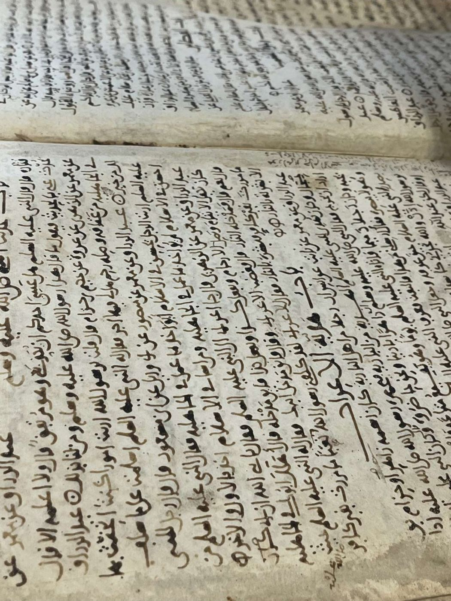
İSTANBUL RAMİ KİTAP ŞİFAHANESİ
Yazma Eserlere Şifa
Süleymaniye Yazma Eser Kütüphanesi’ne bağlı konservasyon-restorasyon laboratuvarında bir yazma eserin tedavi süreci: bozulmayı tanımaktan koruyucu kutuya kadar.
- ATÖLYE
- 5
- BOZULMA ETKENİ
- 10
- TEDAVİ ADIMI
- 7
- 3D MODEL
- 3
KURUMRAMİ KÜTÜPHANESİ · EYÜPSULTAN
İstanbul Rami Kitap Şifahanesi
Türkiye Yazma Eserler Kurumu Başkanlığı bünyesindeki Kitap Şifahanesi ve Arşiv Dairesi Başkanlığı, Eyüpsultan’da tarihî Rami Kışlası’ndan dönüştürülen Rami Kütüphanesi’nde çalışır. Atölyeleri ziyaretçilerin restorasyonu izleyebileceği biçimde tasarlanmıştır.
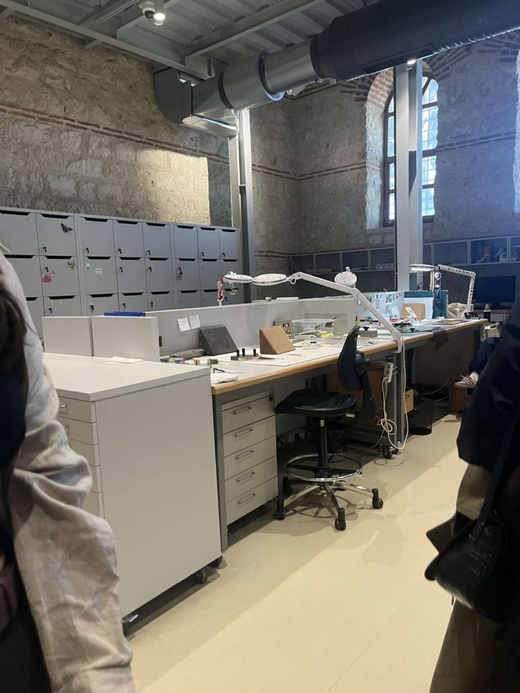
Şifahane modeli: eser bir hasta gibi
YERLEŞKERAMİ KIŞLASI · EYÜPSULTAN
Kışladan kütüphaneye: Rami yerleşkesi
18. yüzyılda topçu kışlası olarak yapılan bina, yaklaşık 200 metrelik avlusunu çevreleyen kanatlarıyla bugün Türkiye’nin en büyük kütüphanesi. Hünkâr Kasrı’ndan avluya girildiğinde Kitap Şifahanesi sol (kuzey) kanattadır.
Ön cephenin ortasındaki beyaz, alınlıklı ve sütunlu köşk; yerleşkeye buradan girilir. Kütüphane 13 Ocak 2023’te açıldı ve 7 gün 24 saat hizmet verir.
Kurum bölümüne git →Sol kanadın avluya bakan şeridi. Şifahane ile koridor arasındaki cam duvarlar sayesinde restorasyon çalışması koridordan canlı izlenir.
Koridorun hemen arkasında, ziyaretçiye kapalı iç ve arka bölmeler. Güneş almayan kör cepheler ve yalıtımlı alt bölümler sıcaklık, nem ve ışığı sabit tutar.
Depo bölümüne git →Avlunun ortasındaki yeni yapı toprağın altına gömülüdür; üstünde yalnızca iki eğimli yeşil çatı plakası görünür. Bodrumdaki ulusal arşiv, Cumhuriyet’ten bu yana basılan yayınların ilk nüshalarını saklar.
Biliyor muydunuz? Tüm yerleşke
- Kışla III. Mustafa döneminde yapıldı; II. Mahmud 1828–1829 Osmanlı-Rus Savaşı’nın askerî ve idari yönetimini buradan yürüttü.
- Bina, Kırım Savaşı’nda Abdülmecid’in karargâhı oldu. 1918–1923 işgal yıllarında Fransız kuvvetlerinin Cezayirli birliklerini barındırdı.
- Ordu 1960’larda ayrıldıktan sonra kışla, içinde 1.500 kadar dükkân bulunan bir gıda toptancıları sitesine dönüştü.
- Kanatları 5 metre genişliğinde, 1,4 kilometre uzunluğunda bir koridor birbirine bağlar.
- Açılıştan önce, 30 Aralık 2022’de Biosphere sürdürülebilirlik sertifikası alan Türkiye’deki ilk kurum oldu.
- Kütüphane 13 Ocak 2023’te açıldı ve 7 gün 24 saat hizmet veriyor.
- Avludaki yeni yapının ortasından geçen yürüyüş yolu, Hünkâr Kasrı’nın aksı üzerine çizildi.
- Kapasite 2,5 milyon kitap ve 4.200 oturma yeri.
- Açılışta restorasyon birimi “adeta bir ameliyathane” diye tanıtıldı.
- Eserler 74 kişilik bir restorasyon ekibince onarılıyor.
- Şifahanede eserlerin dijital görüntülerinin alındığı bir fotoğraf stüdyosu da var.
- Depolar ziyaretçi yollarına kapalıdır; yalnızca yetkili personel girer.
- Güneş almayan kör cepheler, eserleri ışıktan ve sıcaklık dalgalanmalarından korur.
- Yazma Eserler Kütüphanesi, dünyanın en zengin yazma koleksiyonlarından biri olarak tanıtılıyor.
- Bodrumda Cumhuriyet’ten bu yana basılan yayınların ilk nüshaları saklanır.
- Arşiv, dijital arşiv dolapları ve hassas iklimlendirmeyle korunur.
- Çift yükseklikli arşivin bir kısmı zemin kattaki cam bölümden izlenebilir.
DEPOLAMARAMİ · SÜLEYMANİYE · BEYAZIT
Depo: hareketli raf sistemi
Raf blokları ray üzerinde kayar; yalnızca ihtiyaç duyulan koridor açılır. Kapalı bloklar eserleri ışık ve tozdan korur, aynı hacme çok daha fazla eser sığar.
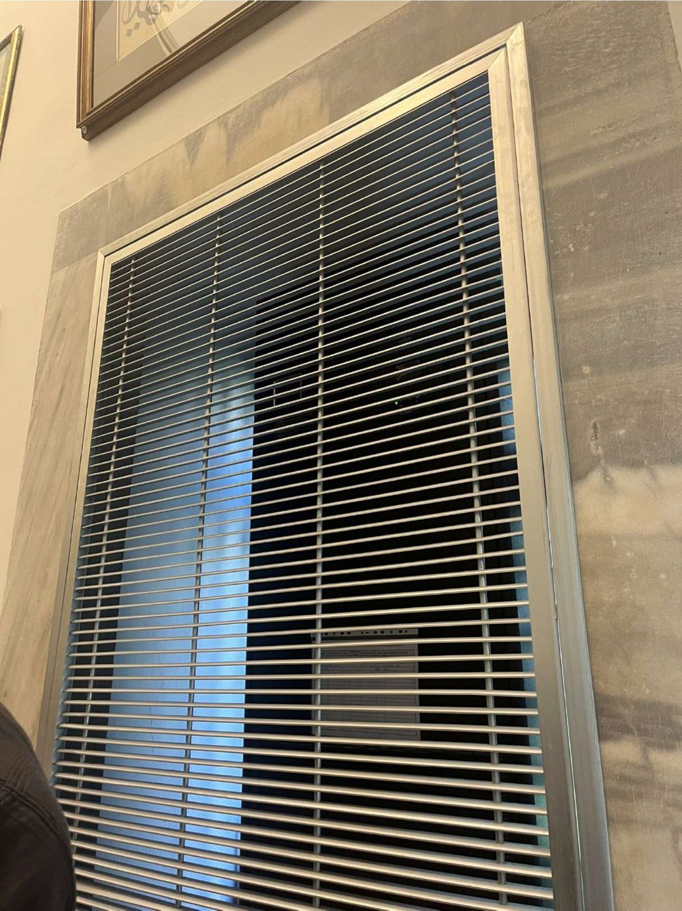
İklim kontrolü
Klima santrali depoya filtrelenmiş, şartlandırılmış hava verir. Sensörler sıcaklık ve bağıl nemi ölçer; denetleyici besleme havasını buna göre soğutur, ısıtır ya da nemini alır. Nem, havayı çiy noktasının altına soğutarak alınır. Sıcak hava yükselir, kapı açıldığında dışarıdaki sıcak ve nemli hava içeri dolar.
- ORTALAMA
- —
- BAĞIL NEM
- —
- BESLEME
- —
- FAN
- —
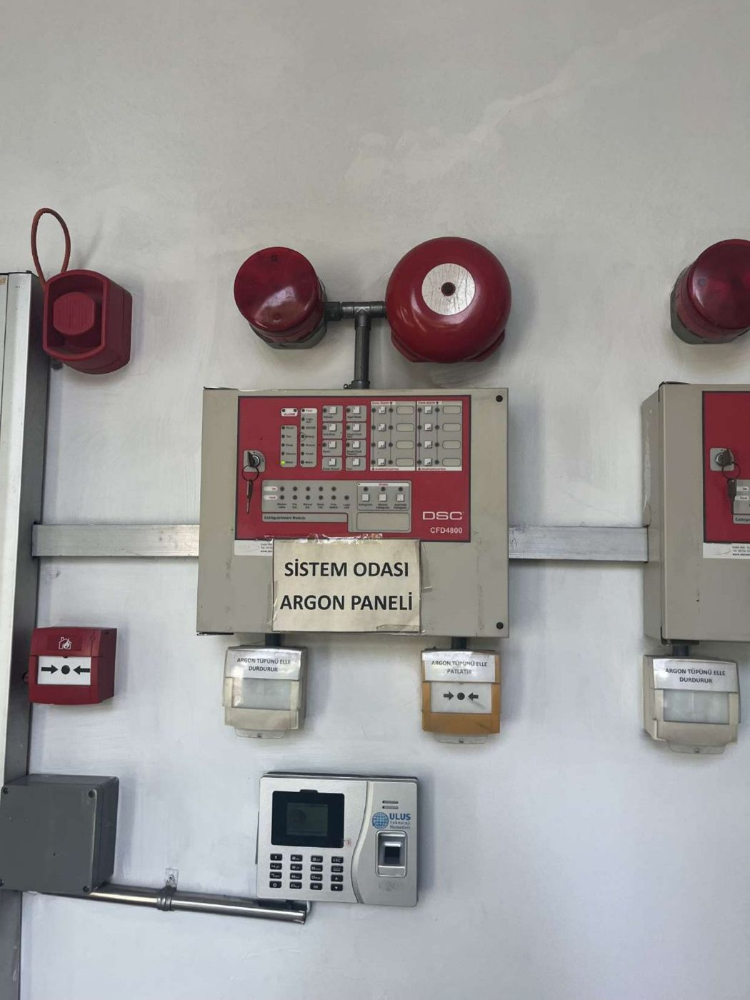
Argon gazlı söndürme
Argon yanmayan ve havadan yaklaşık %38 ağır bir gazdır. Duman dedektörü yangını algılayınca alarm çalar ve oda boşaltılır; ardından nozullardan argon basılır. Odadaki oksijen %21’den yaklaşık %12–13’e iner, çoğu yanma %15’in altında sürmez. Basılan gaz kadar hava tahliye klapesinden dışarı çıkar. Su ve köpük kullanılmadığı için eser ıslanmaz, geride kalıntı kalmaz.
- O₂, YANGIN SEVİYESİ
- %20,9
- ARGON, ORTALAMA
- %0
- SÜRE
- —
Hazır
Süreler kısaltılmıştır; gerçek sistemde alarm gecikmesi ve boşaltım yaklaşık birer dakika sürer.
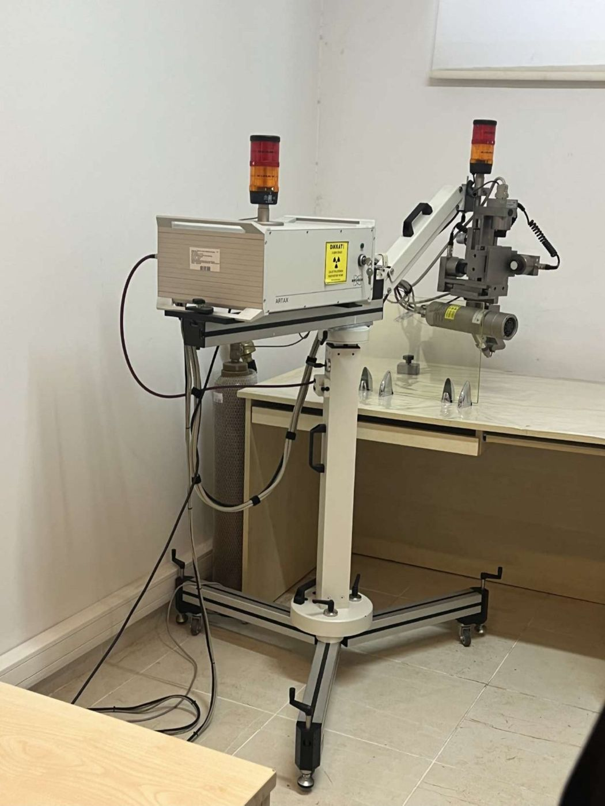
Ar-Ge: mikro-XRF
Eserden örnek almadan, milimetrenin altına odaklanan X ışınıyla elementleri belirler. Gelen ışın atomun iç kabuğundan bir elektron koparır; boşluğu dış kabuktan gelen elektron doldurur ve elemente özgü enerjide bir foton yayılır. Dedektör bu fotonları sayar: tepenin enerjisi elementi, yüksekliği miktarını gösterir.
- SAYIM
- 0
- ÖLÇÜM
- 0 s
- BULUNAN
- —
İs mürekkebinin ana bileşeni karbondur. Karbon gibi hafif elementlerin floresansı havada soğurulduğu için XRF onu göremez; spektrumda yalnızca kâğıdın sinyali kalır.
BONUSXRF’Yİ TAMAMLAYAN YÖNTEM
Taşınabilir Raman spektrometresi
Lazer ışığı pigmente çarpınca neredeyse tamamı aynı renkte geri döner. Çok küçük bir kısmı ise moleküllerin titreşimine enerji bırakır ve rengi biraz kayar. Bu kaymaların deseni maddenin parmak izidir.
XRF elementleri, Raman bileşiği gösterir. Kırmızı bir boyada XRF cıva ve kükürt bulur, Raman bunun zencefre olduğunu doğrular. XRF’nin göremediği is mürekkebi Raman’da iki belirgin bantla ortaya çıkar. Cihaz taşınabilir olduğu için eser yerinden kaldırılmadan, örnek alınmadan ölçülür.
- EŞLEŞME
- —
- BENZERLİK
- —
- SAYIM
- 0
KİTAP SANATLARICİLT VE METİN BLOĞU
Bir yazma eserin anatomisi
Yazma eser, metni kadar kâğıdı, mürekkebi ve cildiyle bir tarih belgesidir. Ciltli kitabın yanında tomar, albüm ve defter biçimleri de vardır.
Türk-İslam cildi
Kapak, sırt, sertap ve miklepten oluşan cilt, metin bloğunu dört yandan saran bir koruyucudur; kitap kapalıyken miklep ön kapağın altına girer.
Metin bloğu neyden oluşur?
El yapımı, aharlı kâğıt; is ya da demir-gal mürekkep; cetvel, tezhip ve minyatür; formalar ve dikiş; mühür, temellük kaydı ve derkenar notları.
Cilt neyden oluşur?
Mukavva kapak; deri, ebru ya da kumaş kaplama; şemse, köşebent ve zencerek süslemeleri; sertap, miklep ve ipek şiraze.
Ferman
Padişah buyruğu taşıyan resmî belge. Uzun kâğıt şeritler uç uca eklenip yazılır ve sarılarak saklanır. Sarılı kâğıt açıldığında kendiliğinden geri kıvrılmak ister.
Murakka
Hat örneklerinin (kıtaların) kartonlara yapıştırılıp akordeon gibi birbirine bağlandığı albüm. Açıldığında kıtalar yan yana bir sergi gibi dizilir.
Cönk
Halk şiirlerinin, türkülerin ve ilahilerin derlendiği, kısa kenarından ciltli uzun ve dar defter. Sayfaları yana değil yukarıya doğru çevrilir.
ÖNLEYİCİ KORUMAON BOZULMA ETKENİ
Önleyici koruma: esere dokunmadan korumak
Her müdahale esere bir miktar risk taşır. Önleyici koruma bütün koleksiyona bakar ve bozulmayı başlamadan yavaşlatmak için çevreyi yönetir.
Depo iklimi simülatörü
Koşullar hedef aralıkta
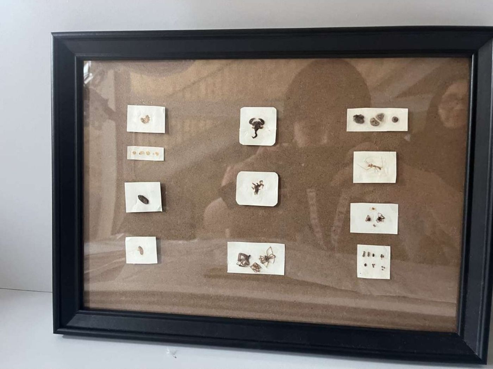
Zararlılarla bütünleşik mücadele
Gümüşçün
Ahar ve nişastayı yiyerek kâğıt yüzeyini aşındırır; karanlık ve nemli ortamı sever.
Kitap biti
Küf hifleriyle beslenir; nemli, küflü ortamda hızla çoğalır. Varlığı nem sorununun habercisidir.
Kitap kurtları
Larvaları kâğıdın içinde ilerleyerek delik ve kıvrımlı galeriler açar, metni de götürür.
Deri böcekleri, termitler, kemirgenler
Cilt derisini, ahşap kapakları ve kenarları tahrip eder.
BOZULMA TÜRLERİCİLT, KÂĞIT VE DİĞER
Hasar kataloğu
Bozulma ya eserin kendi malzemesinden ya da dışarıdan gelir; çoğu zaman da zincirleme oluşur: yüksek nem küfe, küf pamuklaşmaya, pamuklaşma kayba yol açar.
DURUM TESPİTİANALİTİK VE GÖRSEL BELGELEME
Teşhis: durum tespiti ve belgeleme
Binlerce eser aynı anda onarılamaz. Hasarın türü ve yaygınlığı, eserin önemi ve kullanım talebi birlikte değerlendirilip öncelik verilir; seçilen eserde hiçbir işlem belgelenmeden başlamaz.
Hemen müdahale
Aktif küf ya da böcek, dağılan parçalar, kullanılamaz durumda eser. Örnek: sayfalarında aktif küf olan, sık istenen bir mecmua.
Planlı müdahale
Yırtık, yapısal zayıflık, cilt sorunları; eser dikkatle kullanılabilir. Örnek: cildi sağlam, kenarları yırtık bir divan.
Muhafaza ve izleme
Yüzey kiri, küçük aşınmalar; eser stabil. Örnek: yalnızca tozlu, sağlam ve nadiren istenen bir eser.
Genel mantık; kurumun kullandığı ölçek farklı adlandırılabilir.
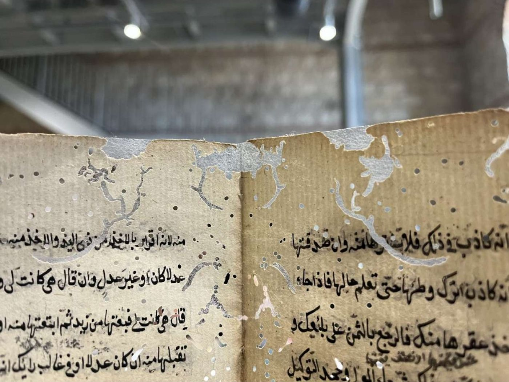
- ANALİTİK
- Künye, ölçüler, kâğıt kalınlığı, kâğıt yapısı ve ahar, mürekkep, cilt ve dikiş tipi, hasarlar
- GÖRSEL
- Normal, yan ve geçirgen ışıkta fotoğraf; ölçek ve renk kartı; önce, sırası, sonra; hasar haritası
MALZEMELERJAPON KÂĞIDI · YAPIŞTIRICILAR
Malzemeler: seçim, hazırlık, kullanım
Konservasyonda her malzeme kararlı, esere uyumlu ve geri alınabilir olmalıdır.
Onarım kâğıdı orijinalden biraz daha ince ve zayıf seçilir: zorlanırsa eser değil, onarım kopmalıdır.
Yapıştırıcı hazırlama
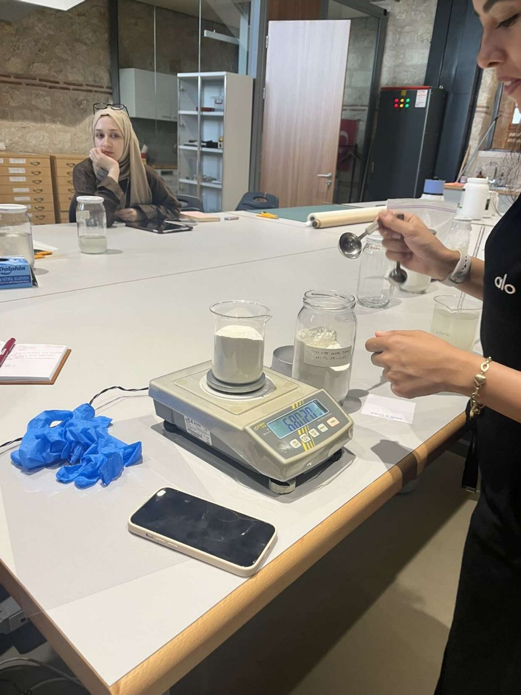
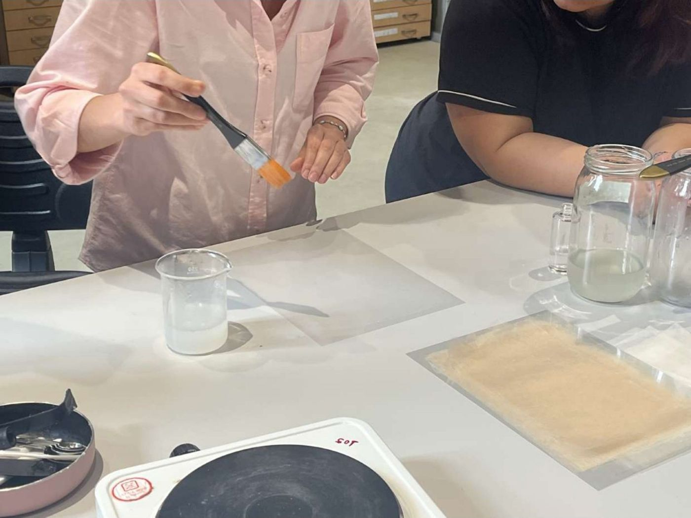
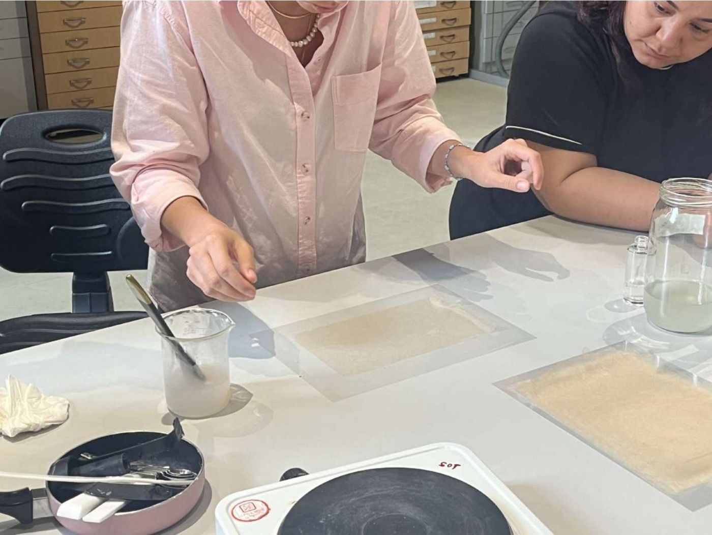
TEDAVİ101 · 102 · 105 · 106 · 108 ATÖLYELERİ
Tedavi: parça parça
Atölyelerde uygulanan işlemler; yaprak, cilt, tezhip, şiraze, mühür ve mürekkep için ayrı ayrı, sırasıyla.
UYGULAMALAR108 · 106 · 101 ATÖLYELERİ
Uygulamalardan yakın plan
Her eski onarım kötü değildir. Eserle uyumlu, tersinir ve eserin tarihine ait onarımlar korunur; esere zarar verenler, kaldırmak bırakmaktan daha az riskliyse çıkarılır.
NİTELİKLİKORUNUR, BELGELENİR
- Dönemin mücellidinin aynı tür kâğıt ve nişastayla yaptığı ince yama
- Tersinir, metni örtmeyen, kâğıdı germeyen onarımlar
- Eserin geçmişine tanıklık eden müdahaleler
NİTELİKSİZGEREKİRSE KALDIRILIR
- Sararan, yapışkanı kâğıda işleyen selobant
- PVA ve diğer sentetik tutkallar; sertleşir, geri alınamaz
- Metni örten kalın, asitli kâğıt ya da kumaş yamalar
106 ATÖLYESAĞLAMLAŞTIRMA
Önce ve sonra
Köşedeki kalkmış parça yerine oturtulup düzleştirildi; böcek delikleri bilerek bırakıldı, çünkü amaç eseri yeni göstermek değil, sağlamlaştırmak.
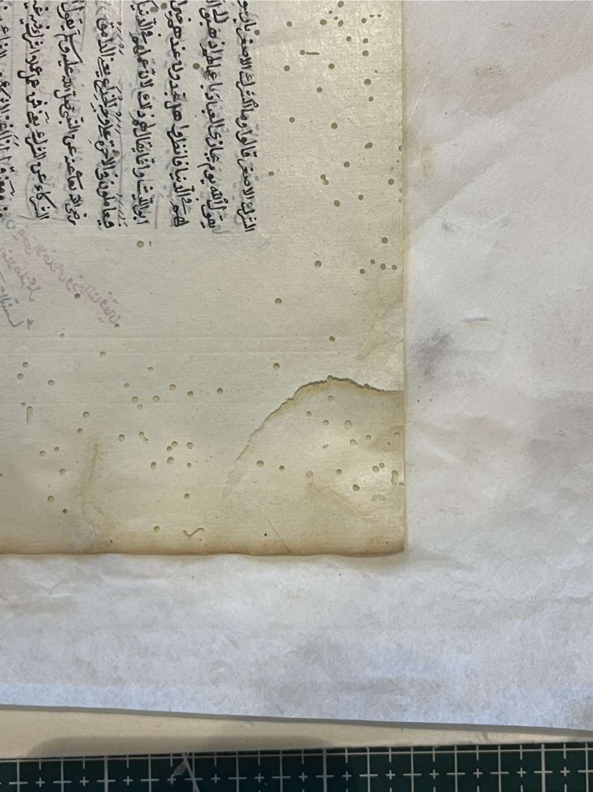
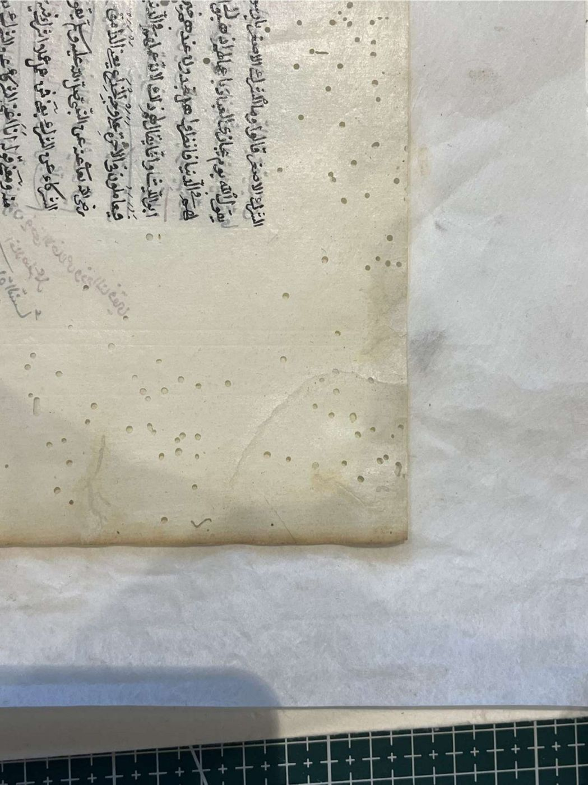
⇆ÖNCESONRA108 ATÖLYEESKİ ONARIM ÇIKARMA
Kırılgan yaprakla çalışmak
101 ATÖLYECİLT
Yazma eser modeli: cildi elle kurmak
101 ATÖLYEKUTU VE PAKETLEME
Son adım: koruyucu muhafaza
Kutu eseri toz, ışık ve darbeden korur, iklim değişimlerini yumuşatır ve kopan parçaların eserle birlikte kalmasını sağlar.
- MALZEME
- Asitsiz, lignin içermeyen, alkali tamponlu mukavva
- ÖLÇÜ
- Yükseklik, genişlik, kalınlık; eser kutuda oynamaz
- YAPIM
- Lif yönü sırta paralel, kemik malayla bigleme
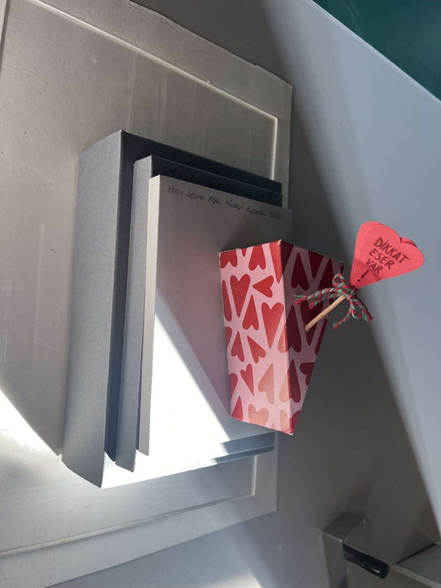
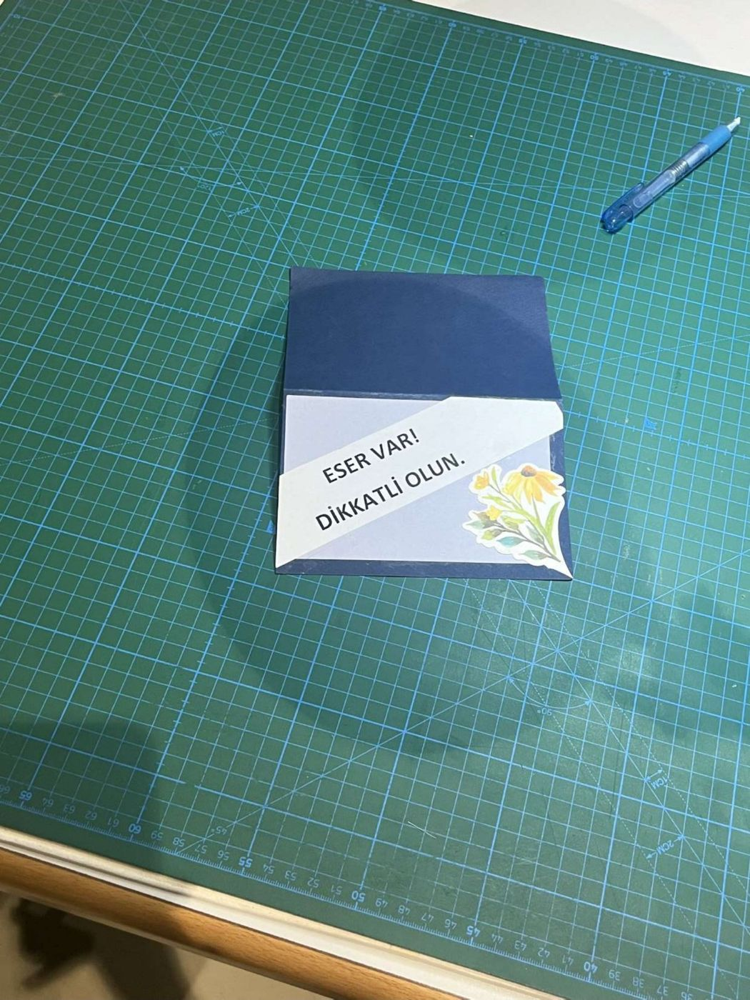
İLKELER
Her kararın arkasındaki ilkeler
Konservasyonda her müdahale, eserin bugününü ve geleceğini birlikte gözeten bu ilkelerle tartılır.
KAYNAKLAR
Kaynakça
Kurum ve yerleşke
- Rami Kütüphanesi. “Şifahane (Restoration House).” ramikutuphanesi.gov.tr
- T.C. Kültür ve Turizm Bakanlığı, KYGM. “Kışladan Kütüphaneye Dönüşen Rami Kütüphanesi Hizmete Sunuldu.” 13 Ocak 2023. kygm.ktb.gov.tr
- Anadolu Ajansı. “Rami Kütüphanesi, her yaşa özel bölümleriyle kitapseverleri ağırlayacak.” aa.com.tr
- TRT Haber. “Kitapların yeniden hayat bulduğu atölye: Kitap Şifahanesi.” trthaber.com
- Arkitera. “Rami Kütüphanesi Ulusal Arşiv Binası.” arkitera.com
- Mimarizm. “Rami Kütüphanesi.” mimarizm.com
- Archnet. “Rami Library.” archnet.org
- Wikipedia. “Rami Barracks.” en.wikipedia.org
Koruma, bozulma ve tedavi
- Canadian Conservation Institute (CCI). Agents of Deterioration (on bozulma etkeni). Ottawa: Government of Canada.
- Neevel, J. G. (1995). “Phytate: a potential conservation agent for the treatment of ink corrosion caused by iron gall inks.” Restaurator 16(3), 143–160.
- Neevel, J. G. ve Reissland, B. (2005). “Bathophenanthroline indicator paper: development of a new test for iron ions.” PapierRestaurierung 6.
- American Institute for Conservation. Book and Paper Group Wiki (deri sağlamlaştırma, yırtık onarımı, tutkallar).
- NFPA 2001. Standard on Clean Agent Fire Extinguishing Systems (inert gazlı söndürme). National Fire Protection Association.
Analiz yöntemleri
- Thompson, A. C. vd. X-ray Data Booklet. Lawrence Berkeley National Laboratory (karakteristik X ışını enerjileri).
- Bell, I. M., Clark, R. J. H. ve Gibbs, P. J. (1997). “Raman spectroscopic library of natural and synthetic pigments.” Spectrochimica Acta Part A 53, 2159–2179.
Simülasyonlar
- Stam, J. (1999). “Stable Fluids.” Proceedings of SIGGRAPH ’99, 121–128 (iklim ve argon simülasyonlarındaki akışkan çözücü).
- WMO (2018). Guide to Instruments and Methods of Observation (WMO-No. 8), doymuş buhar basıncı için Magnus bağıntısı.
- three.js r128 (3D modeller), MIT lisansı.
Görseller ve müzik
- Fotoğraf ve videolar: İstanbul Rami Kitap Şifahanesi, Süleymaniye ve Beyazıt kütüphanelerinde çekilmiştir.
- 3D modeller, simülasyonlar ve çizimler bu site için hazırlanmış basitleştirilmiş temsillerdir.
- “Osmanlı Saray Müzikleri – Kürdili Hicazkâr Taksim (Tambur).”
- “Tanbur Taksimi.”